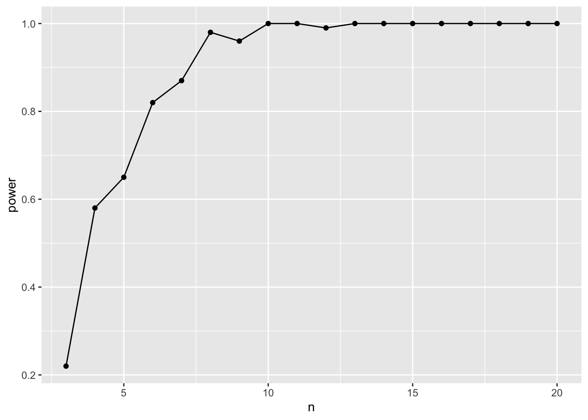
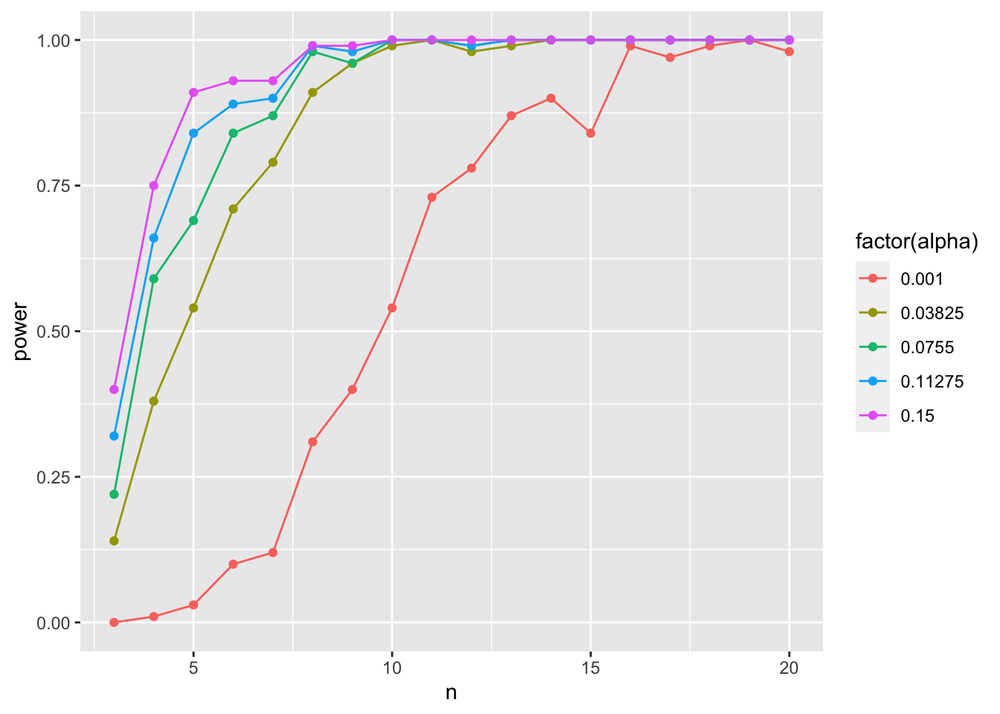
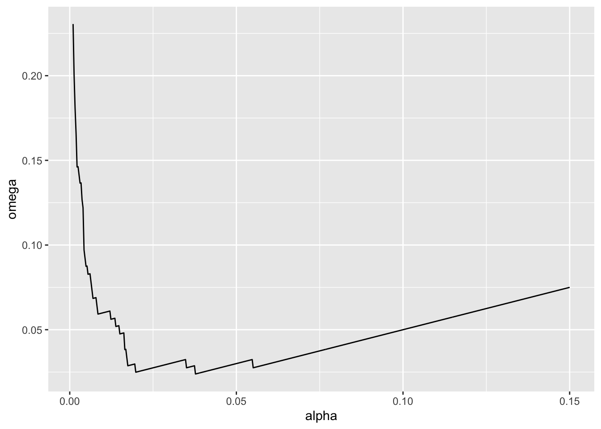
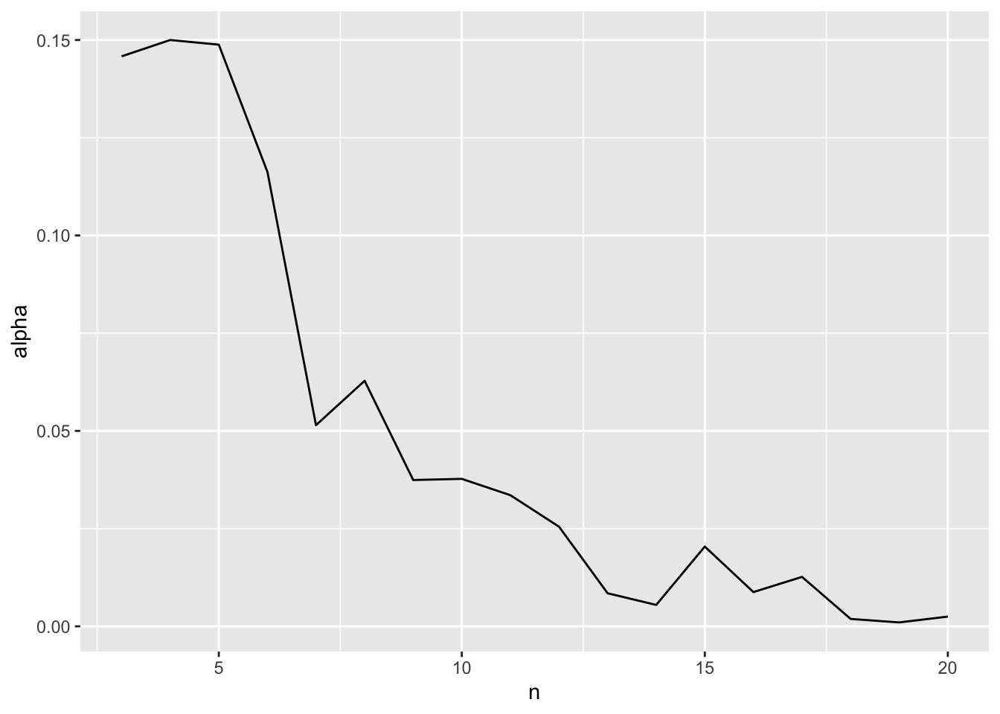

library(dplyr) #for a tidy workflow
library(tidyr) #for crossing and nesting
library(purrr) #for simulation
library(broom) #for tidy stats tables
library(ggplot2) #plots!Power Analysis
1. A Model of the World
All power analyses start with you having to envision how the world works. Let’s say we have a simple example - we’re estimating the power of a linear regression where the True Slope is 3, the intercept is 0, and the residual SD is 5. For the sake of argument, we’ll say that we are sampling randomly with values of x coming from a random uniform with min of 0 and max of 10.
I want you to note just how many things we can tweak. We’re going to focus on sample size - n - but, wow. We could look at how slope, SD, intercept, min value, max value, or even sampling design (we could simulate from a uniform, stratified uniform, or other) all affect power. You can really get lost here! But it’s worth thinking about as you plan!
But it’s all about simulation! So let’s start with a few libraries
2. How we think the world works
We’ll then turn this model of the world where sample size can vary using tidyr::crossing(). First, we need to setup a data frame where we describe the world.
So let’s say
world <- tibble(
slope = 3,
intercept = 0,
resid_sd = 5,
min_x = 0,
max_x = 10
)Next, we can cross this with our sample sizes.
power_sims <- crossing(world,
n = 3:20)And finally, we want to expand this more, as we are going to need replicate simulations at each level of sample size.
power_sims <- crossing(power_sims,
sims = 1:100)
power_sims# A tibble: 1,800 × 7
slope intercept resid_sd min_x max_x n sims
<dbl> <dbl> <dbl> <dbl> <dbl> <int> <int>
1 3 0 5 0 10 3 1
2 3 0 5 0 10 3 2
3 3 0 5 0 10 3 3
4 3 0 5 0 10 3 4
5 3 0 5 0 10 3 5
6 3 0 5 0 10 3 6
7 3 0 5 0 10 3 7
8 3 0 5 0 10 3 8
9 3 0 5 0 10 3 9
10 3 0 5 0 10 3 10
# ℹ 1,790 more rowsGreat! We are ready to go!
3. Creating data
OK, now that we have some parameters together, we need to create data. We’re going to do that with a reframe as we make our data even bigger!
power_sims <- power_sims |>
group_by(n, sims) |>
reframe(x = runif(n, min_x, max_x),
y = rnorm(n, intercept + slope * x, resid_sd))
power_sims# A tibble: 20,700 × 4
n sims x y
<int> <int> <dbl> <dbl>
1 3 1 1.19 4.86
2 3 1 8.40 34.3
3 3 1 6.60 11.6
4 3 2 9.76 25.6
5 3 2 6.02 9.68
6 3 2 0.00695 0.702
7 3 3 8.02 20.8
8 3 3 5.04 6.60
9 3 3 0.00201 -8.74
10 3 4 7.91 28.2
# ℹ 20,690 more rowsFantastic! Note, we’ve lost the other parameter values, but that’s fine. If we were doing a power analysis on any of them, we could have grouped by and retained them.
4. Making p-values
We now want to nest each data set into it’s own little piece to work on. We can do that with tidyr::nest() which will allow us to have what is called a list column. We can then use purrr::map() to map functions over each element of the list column.
power_sims <-
power_sims |>
group_by(n, sims) |>
nest()
power_sims# A tibble: 1,800 × 3
# Groups: n, sims [1,800]
n sims data
<int> <int> <list>
1 3 1 <tibble [3 × 2]>
2 3 2 <tibble [3 × 2]>
3 3 3 <tibble [3 × 2]>
4 3 4 <tibble [3 × 2]>
5 3 5 <tibble [3 × 2]>
6 3 6 <tibble [3 × 2]>
7 3 7 <tibble [3 × 2]>
8 3 8 <tibble [3 × 2]>
9 3 9 <tibble [3 × 2]>
10 3 10 <tibble [3 × 2]>
# ℹ 1,790 more rowsWild, let’s look at one element.
power_sims$data[[1]]# A tibble: 3 × 2
x y
<dbl> <dbl>
1 1.19 4.86
2 8.40 34.3
3 6.60 11.6 It’s a data frame we can work on!
OK, now we can iterate over the data and fit models!
power_sims <- power_sims |>
mutate(models = map(data, ~lm(y ~ x, data = .x)))
power_sims# A tibble: 1,800 × 4
# Groups: n, sims [1,800]
n sims data models
<int> <int> <list> <list>
1 3 1 <tibble [3 × 2]> <lm>
2 3 2 <tibble [3 × 2]> <lm>
3 3 3 <tibble [3 × 2]> <lm>
4 3 4 <tibble [3 × 2]> <lm>
5 3 5 <tibble [3 × 2]> <lm>
6 3 6 <tibble [3 × 2]> <lm>
7 3 7 <tibble [3 × 2]> <lm>
8 3 8 <tibble [3 × 2]> <lm>
9 3 9 <tibble [3 × 2]> <lm>
10 3 10 <tibble [3 × 2]> <lm>
# ℹ 1,790 more rowsNew list column just dropped! We can also look at a single piece of it
power_sims$models[[1]]
Call:
lm(formula = y ~ x, data = .x)
Coefficients:
(Intercept) x
-1.587 3.426 From there, we can iterate over again to get Anova tables
power_sims <- power_sims |>
mutate(anova = map(models, car::Anova),
anova = map(anova, tidy))
power_sims$anova[[1]]# A tibble: 2 × 5
term sumsq df statistic p.value
<chr> <dbl> <dbl> <dbl> <dbl>
1 x 330. 1 2.27 0.373
2 Residuals 145. 1 NA NA And then unnest and filter and select to just what we want.
power_sims_out <-
power_sims |>
unnest(anova) |>
filter(term == "x") |>
select(n, sims, p.value)5. Getting power!
Great! And it’s still grouped! We can now use that, and for each sample size, calculate a false positive rate (which is \(\beta\)) and power given a pre-selected \(\alpha\). Let’s go with 0.07 for funsies.
power_tibble <- power_sims_out |>
group_by(n) |>
summarize(beta = sum(p.value > 0.07)/n(),
power = 1-beta)
ggplot(data = power_tibble,
mapping = aes(x = n, y = power)) +
geom_point() +
geom_line()
So, a sample size if about 6 should be adequate.
6. Playing with Alpha
So, how does \(\alpha\) influence things here? We can actualy look at that by not using a fixed alpha, but instead, try a few! Here we can use tidyr::crossing() to good effect.
library(tidyr)
power_tibble_alpha <- power_sims_out |>
crossing(tibble(alpha = seq(0.001, 0.15, length.out = 5))) |>
group_by(n, alpha) |>
summarize(beta = sum(p.value > alpha)/n(),
power = 1-beta)
ggplot(data = power_tibble_alpha,
mapping = aes(x = n, y = power, color = factor(alpha))) +
geom_point() +
geom_line()
As you increase alpha, your power goes down and you need a higher sample size to achieve comparable power!
7. Mudge’s Optimal Alpha
We can actually use that approach to calculate Mudge’s Optimal Alpha. Let’s assume there is an equal cost to a type I versus type II error (a good call in many studies!). We can use the approach above to calculate \(\omega = (\alpha + \beta)/2\) and then find the value of \(\alpha\) at the minimum of \(\omega\). And we can do this for different sample sizes. Let’s go with 10.
mudge <- power_sims_out |>
crossing(tibble(alpha = seq(0.001, 0.15, length.out = 500))) |>
group_by(n, alpha) |>
summarize(beta = sum(p.value > alpha)/n())|>
mutate(omega = (alpha + beta)/2,
power = 1-beta)
ggplot(data = mudge |> filter(n == 10),
mapping = aes(x = alpha, y = omega)) +
geom_line()
mudge |>
ungroup() |>
filter(n == 10) |>
filter(omega == min(omega))# A tibble: 1 × 5
n alpha beta omega power
<int> <dbl> <dbl> <dbl> <dbl>
1 10 0.0377 0.01 0.0239 0.99We can even look at how the optimal alpha will change by sample size
opt_alpha <- mudge |>
filter(omega == min(omega))
ggplot(data = opt_alpha,
mapping = aes(x = n, y = alpha)) +
geom_line()
Neat!
8. Example
Let’s say we have a simple experiment - we have three groups, A, B, and C. The true value of y for each group is 1, 3, and 5, respectively, with a residual standard deviation of 2. Note, to replicate treatments, rep(c("A", "B", "C"), n) should do! Similarly, use a vector for means to a normal distribution when simulating y.
If alpha = 0.05, what’s the optimal sample size to achieve a power of 0.8 for an F test?
If alpha = 0.05, what’s the optimal sample size to achieve a power of 0.8 for a comparison of group B to C?
What is the optimal alpha for an F test with a sample size of 12?